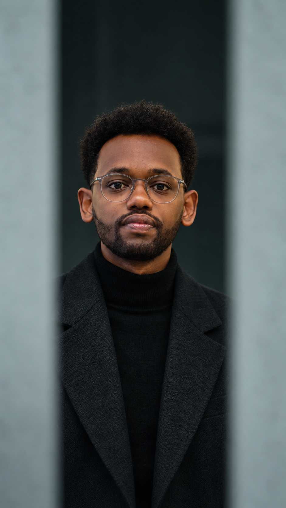
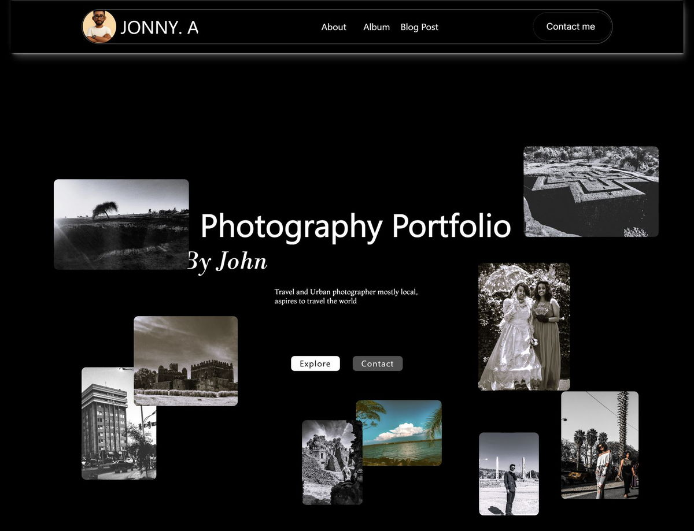
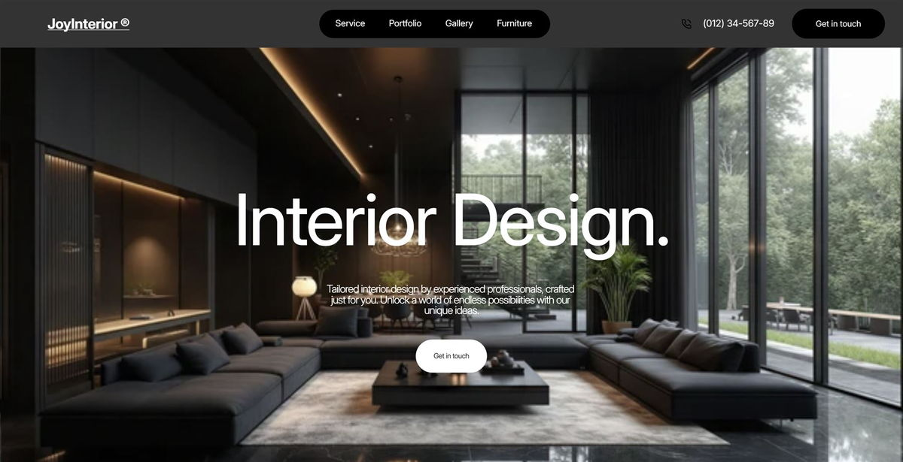
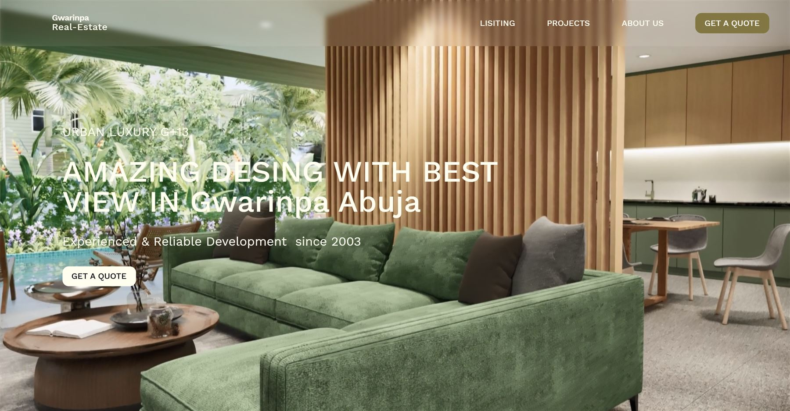

Group it around the questions people actually ask.
Make thecomplexclear.
I help people understand what matters and what to do next. That starts with the problem behind the brief, then becomes a clear information system, a visual language, and an experience that works across screens.

Research · Structure · Interaction · Delivery
Clarity is a design outcome.
A better interface is not decoration added to a problem. It is a route through the problem, made visible.
Show what matters first, then give each decision room.
Connect discovery to an action people can complete.
Start with the friction.
The visual style changes with the subject. The way through stays consistent: understand the situation, shape the system, check it in use.
Understand the moment
Who is here? What are they trying to do? Where does the current experience lose them?
Shape the route
Give content, controls, and choices an order that matches the way people make sense of the task.
Test the decisions
Review real screens with real content, then refine the details that make the next step easier.
Structure makes room for feeling.
My background in architecture changed how I see a screen. It is a place people move through: a sequence of attention, decisions, and small moments of confidence.
I bring that spatial thinking to digital products, websites, and visual identities — using the character of each subject to shape a system that feels coherent and works in practice.
Design, with the problem in view.
Each story follows the challenge through the choices that shaped the finished experience.






Good work starts with listening.
“His design transformed my travel agency business. He converted my ideas into a high-performing, visually striking website.”
Sarah YaredOwner, ETtravel
“He took the time to understand our goals and delivered a design that resonated perfectly with our audience.”
Liya WolduProduct Manager, JoyInterior
Working together
A few practical things.
What can you help with?
Product and interface design, websites, visual identities, and graphic design — depending on what the problem calls for.
Where does a project begin?
With a conversation about the audience, the current obstacle, and what needs to change. We agree on a useful scope before design begins.
How do you know a direction is working?
We compare the screens to the original need: can people find the right information, understand their options, and move forward?
How do I start a conversation?
Send a note about what you are making and where people get stuck. We can work out the next step from there.
Start with the thing that feels stuck.
Tell me who the experience is for, what is getting in their way, and what needs to become easier. I’ll reply within one working day with a useful next step and a written scope before work begins.
- yohannesassefa17@gmail.com
- +251 92 124 4796
- Addis Ababa, Ethiopia · GMT+3